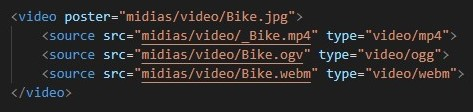

Síntese sobre Multimídias (Aula 13)
Por: Gabriel Emanuel
ATALHOS
O que é Mutimídia?
É uma forma de comunicação que combina diferentes formas de conteúdo, como
Para isso, usaremos a tag <IFRAME>, que será utilizada para incorporar outro documento ou mídia no nosso arquivo HTML. Com esse recurso, por exemplo, podemos incorporar até um outro site dentro do nosso site.
Sua sintaxe padrão é:
Caso a imagem esteja pequena, clique aqui para aumentá-la ^^
Sabendo isso, vamos trabalhar com essa tag na prática!
Extenção Live Server.
Antes de tudo, vamos instalar uma extenção no Visual Code que permitirá que, todas alteraçóes que sejam feitas no documento HTML, sejam feitas instantaneamente no navegador.
Para isso, clicamos no botão de extensões, localizado na barra lateral esquerda do software
Após isso, na caixinha de texto, vamos pesquisar por LIVE SERVER e clicamos na primeira opção que aparecer
Depois, é só realizar a instalação!
Feito isso, vamos por a mão na massa ^^!
Inicialmente, vamos criar uma estrutura padrão e configurar/alterar algumas coisinhas.

Caso a imagem esteja pequena, clique aqui para aumentá-la ^^
Incorporando Sites dentro de um Arquivo HTML.
A partir dessa estrutura, vamos definir um “h2” destacando que trataremos sobre a tag <iframe>, seguido de uma descrição da mesma.
Feito isso, vamos inserir um “h3” destacando que trataremos sobre como Incorporar Outro Site dentro do Site (essa página serivirá de testes para os nossos códigos!).
Para exemplificar, vamos utilizar o site do Instituto Federal do Paraná do Campus de Irati e que deseja-se exibí-lo dentro de um outro site, no caso, na nossa página de testes. Como podemos fazer isso?
Caso a imagem esteja pequena, clique aqui para aumentá-la ^^
Observe como ficou isso na prática:
Note que o nosso iframe ficou com dimensões muito pequenas e isso gerou, inclusive, uma má exibição do site. Mas, a boa notícia é que podemos alterar esses parâmetros manualmente, através dos atributos height e width. Vamos fazer isso agora, determinando uma largura e uma altura de 300 pixels!
Caso a imagem esteja pequena, clique aqui para aumentá-la ^^
Observe que a nossa alteração deu surtiu efeito, mas ainda podemos melhorá-la.
Um detalhe importante que podemos perceber sobre o site que estamos utilizando como exemplo. Podemos afirmar com toda a certeza de que ele é um SITE REPONSIVO
Mas, o que é um site responsivo?
Bom, basicamente, um site responsivo é um site que pode se adaptar a todo e qualquer tamanho (dimensão) de tela. Por exemplo, um mesmo site que se adapte tanto a tela de um computador quando de um celular.
Repare isso no fragmento abaixo e conclua que, mesmo a tela, que está com dimensões reduzidas, a sua exibição está confortavelmente e automaticamente adaptada a essa circunstância, não havendo, por exemplo, nehum texto que ultrapasse os limites, criando uma borda inferior.
Incorporando Áudios.
Para incorporarmos áudios em um arquivo HTML, vamos fazer uso de uma plataforma web chamada SoundCloud, disponível nesse link.
Para realizarmos a inserção de uma música a partir deste site, vamos seguir o seguinte passo-a-passo
- Vamos acessar a aba de pesquisa:
- Realizamos uma busca por uma música, por um artista, por uma banda....:
- Após encontrar e selecionar a faixa desejada, clicamos na opção “compartilhar” que estará localizada logo abaixo da mesmo:
- Agora acessamos a aba “Incorporado”:
- Na tela carregada, temos um campo enunciado como “Código”. Vamos selecionar e copiar (Ctrl + C):
- Agora retornamos ao nosso Visual Code e vamos colar (Ctrl + V) esse código. No meu caso, ficou assim:
- Na prática, o nosso áudio ficou assim:
- Para dar o “play”, basta clicar no círculo laranja:
- Ainda é possível notar a existência de alguns links lincáveis!
Se analisarmos este código, vemos que as dimensões que ele ocupa estão dados em porcentagem, no caso da largura, e em pixels, no caso da altura.
Caso a imagem esteja pequena, clique aqui para aumentá-la ^^
Podemos alterar esses dois valores para 30%. Isso significa, na prática, que a largura e a altura irão ocupar 30% do espaço que estiver disponível!
Dessa forma, passaríamos a ter o seguinte código:
Caso a imagem esteja pequena, clique aqui para aumentá-la ^^
E ele, nos retorna o seguinte resultado:
Incorporando Vídeos
Para incorporarmos um vídeo, vamos fazer uso da plataforma YouTube. Para o nosso exemplo, vamos utilizar o seguinte vídeo (No caso, a visualização ficará dessa forma também):
Mas, como podemos fazer isso?
- O primeiro passo é acessar a plataforma do YouTube e escolher o vídeo que se deseja-se ser incorporado.
- Após abrir o vídeo, clique sobre o botão “compartilhar”
- Clique no campo “Incorporar”:
- Copie o código que será exibido na tela, clicando em “COPIAR”
- Feito isso, é só inserir esse código dentro do arquivo HTML que estamos desenvolvendo!
- Mais uma vez, o resultado final ficou assim:
Caso a imagem esteja pequena, clique aqui para aumentá-la ^^
Caso a imagem esteja pequena, clique aqui para aumentá-la ^^
Tag <video>
Anteriormente, visto que era possível incorporar um vídeo através da tag <iframe> a partir de vídeos que estão disponíveis no YouTube.
Porém, e quando queremos incorporar um vídeo que está que não está no Youtube?
Quando temos o vídeo em um arquivo na nossa máquina ou no nosso servidor, podemos fazer uso da tag <video>
De forma bem prática, vamos começar definindo o atributo poster, que, vai definir o caminho de uma imagem que será exibida até que o usuário dê o play no vídeo
Caso a imagem esteja pequena, clique aqui para aumentá-la ^^
Na prática, podemos ter o seguinte código:
Caso a imagem esteja pequena, clique aqui para aumentá-la ^^
Dentro dessa tag <video>, usaremos a tag <source> acompanhada do atributo src que vai receber o caminho no qual se encontra o vídeo e do atributo type, que vai indicar qual é o tipo/formato do vídeo, como ilustra a imagem a seguir:
Caso a imagem esteja pequena, clique aqui para aumentá-la ^^
Na prática, temos o seguinte:
Caso a imagem esteja pequena, clique aqui para aumentá-la ^^
O HTML possui um recurso bem interessante no qual é possível utilizar, dentro da tag <video>, vários <source> diferentes. Na prática, quer dizer que, caso haja algum problema e não seja exibido o primeiro vídeo, é exibido o segundo... se não der para exibir o segundo, ele tenta exibir o terceiro... e assim por diante!
Caso a imagem esteja pequena, clique aqui para aumentá-la ^^
Por exemplo:

Caso a imagem esteja pequena, clique aqui para aumentá-la ^^
No entanto, se visualizarmos esse código no navegador, observamos:
A mensagem que passa é a de que é apenas uma imagem.
Para solucionarmos esse problema, vamos ativar os controles por meio da inclusão do atributo controls na tag <video>, da seguinte forma:
Caso a imagem esteja pequena, clique aqui para aumentá-la ^^
Observe que o vídeo já pode ser exibido:
Observe que o primeiro chama-se <_Bike.mp4>. Vamos alterar o nome deste arquivo para apenas Bike.mp4, da seguinte forma:
Pela propriedade anteriormente citada, a visualização NÃO pode ser afetada!
Agora, observe:
Observe que o vídeo inserido funcionou normalmente!
Tag <audio>
DICA: Para baixar música sem Direitos Autorais, utilizar a Biblioteca de Áudios do YouTube, disponível acessando o menu studio
A sua sintaxe e estrutura se dará de uma forma bem similar à da tag anterior. Começamos definindo a tag <audio>, seguido do atributo preload com o valor metadata, ou seja, para realizar o carregamento de todas as informações internas do nosso áudio, seguido do atributo controls, com a mesma utilidade do caso anterior: habilitar os controles para a manipulação, neste caso, do áudio.
Caso a imagem esteja pequena, clique aqui para aumentá-la ^^
Dentro do seu escopo, utilizaremos novamente a tag <soure> para definir o caminho do áudio.
Para isso, usaremos os mesmos atributos que vimos anteriormente.
Nesse caso, podemos ter:
Caso a imagem esteja pequena, clique aqui para aumentá-la ^^
Ao visualizarmos a página, temos:
Tag <picture>
É utilizada para agrupar várias imagens que serão renderizadas conforme as dimensões da tela no qual o site estará sendo exibido.
Para utilizarmos-a, vamos definí-la através da seguinte sintaxe:
Caso a imagem esteja pequena, clique aqui para aumentá-la ^^
Dentro dela, vamos inserir uma imagem que possui uma resolução muito grande (1080x720) dentro de uma tag <img>, que ficou assim:
Observe que se diminuirmos a tela, a imagem não se reajusta às novas margens:
Porém, vamos aprimorar essa estrutura utilizando a tag <source>, porém, dessa vez, de uma forma diferente.
Inicialmente, vamos definir o atributo media que vai receber um valor máximo de largura, como se fosse uma espécie de condicional.
Sua sintaxe vai ficar um pouquinho diferente do que estamos habituados a trabalhar:
Caso a imagem esteja pequena, clique aqui para aumentá-la ^^
Também vamos definir o atributo srcset, que vai receber o caminho de onde está localizada a imagem.
Unindo os dois atributos, a sintaxe fica da seguinte forma:
Caso a imagem esteja pequena, clique aqui para aumentá-la ^^
Para ficar mais claro, vamos considerar o seguinte código:
Caso a imagem esteja pequena, clique aqui para aumentá-la ^^
Vamos ler esse código!
A primeira <source> demarca que, se a largura máxima da tela for de até 500 pixels, renderize a imagem bike_110.jpg. Porém, se não for, passa para os demais <source>: se a condicional do segundo <source> não for atendida, passa para o terceiro. Caso hipoteticamente, tivessem mais <source>'s e nenhum dos testados até agora atendessem a condicional, a testagem continuaria até o último (que seria o pior caso possível)
Observe como fica a visualização neste caso:
Para explorar:

Para explorar: Arquivo HTML criado durante a aula!
Última modificação em: 28/09/2021 às 00:20, horário oficial de Brasília - Brasil